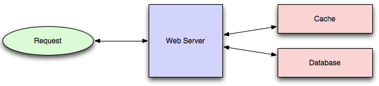
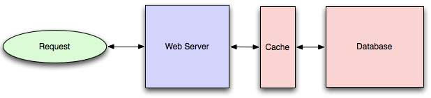
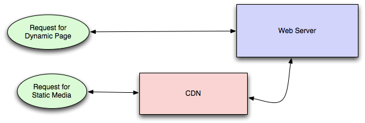
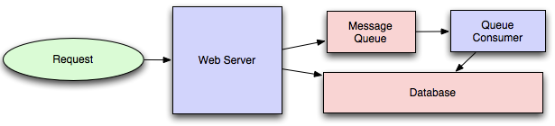
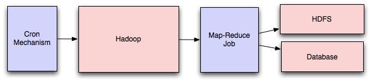
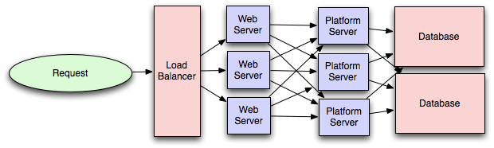

可伸缩系统架构简介
很少有计算机或者软件开发的教程来教学可伸缩系统的构建方式。相反，只有在工作中经历过一款快速成长的产品所带来的痛苦，或者与经历过这样痛苦的人一起工作，才能慢慢学习系统架构。
在这篇文章中，我尝试将我在雅虎和 Digg 工作时所积累的一些构建伸缩性架构的经验和教训记录下来。
我将文章示意图所用的颜色做如下约定：
- 绿色：代表从外部客户端发来的外部请求（从浏览器发出的 HTTP 请求，等等）
- 蓝色：表示你的代码所运行的容器（Django 应用运行在 mod_wsgi，Python 脚本监听 RabbitMQ 等等）
- 红色：表示基础设施（MySQL，Redis，RabbitMQ 等等）
负载均衡
一个理想的系统可以通过增加硬件来实现扩容。在这样一个系统中，如果在一台机器的基础上增加一台，那么系统的容量就增加了一倍。如果在三台机器的基础上增加一台，那么系统的容量就增加了 33%，这种特性称之为水平可伸缩性。
从坏的方面来考虑，一个理想的系统不会因为下线了一台服务器而使服务中断，当一台服务器下线时，整个系统减少的容量应该等于添加这台服务器时所提升的容量，这种特性称之为冗余。
系统的水平伸缩性和冗余通常都是通过负载均衡来获得。
这篇文章不会讨论垂直可伸缩性，因为在大型系统中，一般不会使用这种方式。从长期来看，给系统扩容，添加机器会比在单台机器上添加资源更便宜，而且从另一方面来说，冗余和垂直可伸缩性也是冲突的。

负载均衡是通过一些算法和系统当前的状态来将请求分散到多个资源的过程。算法一般有随机算法，round-robin 算法，根据服务器容量的加权随机算法等等，状态则是指可处理请求，无法响应，错误率升高等等。
负载需要在用户请求和 Web 服务器之间进行平衡，但也必须在每个阶段进行平衡，以实现系统的完全可伸缩性和冗余。一个中等大小的系统可以在三个层面平衡负载：
- 用户到 Web 服务器
- Web 服务器到内部平台层
- 内部平台层到数据库
下面是实现负载均衡的一些方法：
智能客户端
为数据库（或者缓存，服务等等）客户端添加负载均衡的功能对开发者来说是一个比较有吸引力的解决方案。是因为这是一个最简单的方案吗？并不是。是因为这个方案的健壮性好吗？也不是。是因为这个方案容易被重用吗？更不是。
开发人员倾向于智能客户端，因为他们是开发人员，所以他们习惯于编写软件来解决他们的问题，而客户端就是软件。
那么到底什么是智能客户端，总的来说就是客户端中维护一个服务器地址的连接池并根据服务器的情况进行负载，检测下线的服务器并且避免给这些服务器发送请求，并且能够连接重新上线的服务器和新上线的服务器，为了实现这些功能则需要大量的配置。
客户端中设置一个的主机列表，负载均衡将会使用这个主机列表来实现，好处是这对开发人员来说很简单，坏处是更新很麻烦。
硬件负载均衡器
硬件负载均衡器价格最昂贵，但性能也是最好的（比如 Citrix NetScaler）。虽然它们可以解决大多数的问题，但价格也确实是非常的贵，并且需要做大量的配置。
因此，即使是拥有大量预算的大型公司，也会尽量避免使用专用硬件来满足所有系统的负载均衡需求，而是仅仅在用户请求进入到系统的时候使用，进入到系统网络之后，就会使用其他的机制（智能客户端或者下面将要讨论的混合方法）来实现负载均衡。
一般大公司在用，性能很好，但是价格比较贵，而且使用也很复杂。
软件负载均衡器
如果你既不想经历维护智能客户端的痛苦，也不想花那么多钱去买专门的硬件设备，还有其他的选择：软件负载均衡器。
HAProxy 就是一个很好的例子。它运行在本地机器上，并且和每一个需要进行负载均衡的服务绑定端口。举例来说，你现在的应用访问地址是 localhost:9000，数据库的读库访问地址是 localhost:9001， 数据库的写库访问地址是 localhost:9002。HAProxy 会对需要负载的机器进行监控检查，根据用户的配置来下线机器或者添加机器，也会对这个池子中所有可用的机器进行负载均衡。
PS: 现在使用 Nginx 来做负载均衡也很好
对于大多数系统，可以先从软件负载做起，如果有必要，再使用智能客户端和硬件负载均衡。
这是最推荐的方式，软件可以用来做负载均衡，健康检测等功能
缓存
负载均衡可以帮助你通过添加机器来帮助服务实现水平扩展，但是，缓存使你能够更好地利用现有的资源，并使无法实现的产品需求变得可行（提高了资源的访问速度）。
可以被缓存的内容有：提前计算好的结果（比如：前一天每个域名的访问数据），提前生成的索引（比如：基于用户的历史点击而生成的推荐故事），需要频繁访问数据（比如：使用 Memcache 而不是 PostgreSQL）。
实际上，在系统的早期阶段，缓存比负载均衡更加重要，提前制定好缓存策略可以在后续的开发中节省时间。它还可以确保你不会优化无法通过你的缓存机制复制的访问模式或在添加缓存后性能变得不重要的访问模式（我发现对许多经过高度优化的 Cassandra 应用程序干净地添加缓存是一个挑战，无法将数据库的缓存策略应用于你的访问模式，因为 Cassandra 与缓存之间的数据模型通常不一致）。
应用缓存 VS 数据库缓存
缓存的方式主要有两种：应用缓存和数据库缓存（大多数系统都重度依赖这两种缓存方式）。
应用程序缓存需要在代码中编写缓存的逻辑，通常会先检查缓存中有没有值，如果没有，就回去数据库中获取并写入到缓存中（如果你使用的是最近最少使用缓存算法，那么值就很容易获取到），典型的代码如下（这是一个 Read-Through 缓存，如果缓存中没有值，就会去数据库中获取数据，然后再保存到缓存中）：
key = "user.%s" % user_id
user_blob = memcache.get(key)
if user_blob is None:
user = mysql.query("SELECT * FROM users WHERE user_id=\"%s\"", user_id)
if user:
memcache.set(key, json.dumps(user))
return user
else:
return json.loads(user_blob)
数据库缓存用的也很广泛。

只要使用数据库，就可以通过默认配置获得一定程度的缓存和性能。初始化的配置会优化通常的场景，针对你的系统做出针对性的配置之后就会极大的提升性能。
使用数据库缓存的最大好处是系统的代码不用做任何改动就可以提升性能，而且一个优秀的 DBA 也可以在不改动代码的情况下来提升程序的性能（我的同事 Rob Coli 最近花了一些时间优化 Cassandra 行缓存的配置，图表显示系统 I/O 负载急剧下降并且请求延迟也大大缩短了）。
数据库缓存简单有效，而且不用开发人员做额外的工作，而应用缓存则需要开发人员自己实现
内存缓存
对于系统而言，最有效的缓存是将整个数据集存储在内存中，Memcached 和 Redis 都是使用内存缓存来实现的（Redis 可以将数据持久化到硬盘上）。这是因为访问内存要比访问硬盘快几个数量级。
但是内存空间肯定要比硬盘少的多，所以要通过一定的策略让内存中只保留热点数据。使用最广泛的就是最近最少使用策略（LRU），Memcache 使用的就是这个策略（Redis 2.2 之后的版本也可以配置这个策略）。LRU 策略会淘汰那些访问较少的数据而保留那些经常被访问的数据，这在大多数情况下都是最合适的缓存策略。
性能最好，但是内存太贵了
内容分发网络（CDN）
内容分发网络是一种特别的缓存（用人觉得 CDN 不是缓存，但我认为是），用来加速有大量静态媒体资源的站点。

CDN 为你的应用服务器（用来处理动态资源而不是静态资源）分担静态资源的访问压力，并且提供局域地理位置的分发方式。总的来说，站点的静态资源访问的速度将会更快，服务器的压力将会更小（但是会产生额外费用的压力）。
使用 CDN 后，请求会先去你的 CDN 上获取静态媒体资源，如果这些资源已经在 CDN 上，就会直接返回（HTTP 的头部用于配置 CDN 如何缓存给定内容）。如果 CDN 上找不到资源，CDN 就会去服务器上获取资源，然后缓存在本地，并且将内容提供给请求方（在这个配置中，CDN 充当 Read-Through 缓存）。
如果目前网站的规模还没有大到需要使用 CDN，在过渡期，可以使用 Nginx 这类的轻量级 HTTP 服务器使用单独的域名（比如：ststic.example.com）来将静态资源的访问进行分离，并在以后将 DNS 从服务器切换到 CDN。
把静态资源从应用服务器上迁移到专门的内容分发缓存上，减轻应用服务器的压力
缓存失效
尽管缓存很有用，但是也必须要保证缓存与数据源（比如：数据库）中数据的一致性，避免程序中出现奇怪行为的风险。
可以通过缓存失效来解决这个问题。
如果你要处理的是单个数据中心，直接使用缓存就可以，但是如果有多个代码路径会写入数据库和缓存，就很容易引起错误（特别是不把缓存策略考虑清楚就开始写代码）。通常的解决办法是在值变化后，就把改变后的值写入到缓存中（这种方式叫做 Write-Through 缓存）或者直接删除缓存中的值，然后通过 Read-Through 读取缓存时将值写入到缓存中（使用哪种方式取决于应用的细节，但是通常我更喜欢使用 Write-Through，这样可以避免瞬间给后端数据库造成过大的压力）。
在一些模糊查询的场景，失效策略变得更具有挑战性（比如在 SLOR 这样的全文搜索引擎上添加应用级缓存），或者对未知数量的元素进行修改（比如：删除一个礼拜前创建的所有对象）。
在这些情况下，你必须考虑完全使用数据库缓存，给缓存的数据设置过期时间或者重写应用的逻辑以避免这些问题（比如：不要使用 DELETE FROM a WHERE... 来进行删除，而要检索所有符合条件的项，使相应的缓存行失效，然后后通过主键显式删除这些行）。
缓存很有用，但是你必须让缓存安全的失效
离线处理
随着系统越来越复杂，总是需要去处理那些无法直接在线上处理的任务，因为直接在线上处理会造成不可接受的延迟（比如：想在社交图谱上查看用户的传播操作）或者是这些任务需要被周期性处理（比如：想要每日的分析汇总）。
消息队列
对于那些实时处理会很慢的请求，最容易的解决方法就是创建一个消息队列（比如使用 RabbitMQ）。消息队列允许你快速将消息发布到队列中，然后让其他的消费者进程异步进行处理。
离线消息队列处理请求和 Web 应用实时处理请求的划分取决于你向用户暴露的接口。通常你需要：
- 在消费者中几乎什么都不用做（只要设定一个任务）并且通过用户这个任务将会离线处理，接口将会使用轮询机制来检查任务是否完成。
- 或者实时完成大部分工作，在用户看起来任务已经完成，然后实际把剩下的工作留到后续处理（比如你在 Twitter 或者 Facebook 上发布消息后，你自己的时间线会很快更新，但你的关注者的时间线会稍后更新，因为不可能实时的更新你所有关注者的时间线）

消息队列还有一个好处，就是可以使用单独的机器来离线处理消息而不用加大当前 Web 服务器的压力。这可以使你将资源聚焦投入到影响性能和吞吐量的瓶颈，提高资源的使用率。
周期性的定时任务
几乎所有的大系统都需要执行定时任务，但是依然没有出现被广泛接受，可以支持大型系统定时任务的解决方案。同时，你可能依然对 cron 感到困惑，但是你可以使用 cronJob 来向消费者发布消息，cron 机器仅仅负责调度就可以，不用处理这些消息。
有谁知道解决这个问题的公认工具？我见过许多自己开发的系统，但是没有找到干净并且可以重用的系统。当然，你可以配置一台机器使用 Puppet 来存储 cronJob，这很容易恢复那些丢失的定时任务，虽然还是需要手动恢复，但还可以接受。
MapReduce
如果你的大系统需要处理大量的数据，可能就需要 MapReduce 的支持，会用到 Hadoop，Hive 和 HBase 等技术。

使用 MapReduce 可以使处理大量数据或者耗时操作所需的时间控制在合理的范围内。你可以使用 MapReduce 来计算社交关系中的推荐好友，或者生成分析报告。
对于小系统，可以避免使用 SQL 数据库上的临时查询，一旦数据量增长到需要搭建从服务器来对数据库进行分片，以支持这些查询，那么种种方式就很难扩展（到那时，你就会用专门处理大量数据的系统，而不是继续在数据库中挣扎）。
平台层
许多应用在刚开始的时候都是使用一个 Web 服务器直连数据库的结构。这种方式对大多数应用是够用了，但总有一些正当的理由来添加一个平台层，比如平台层可以让 Web 应用和数据库解耦，Web 应用连接平台层，平台层连接数据库。

首先，分离 Web 应用和平台层可以让你分别对两部分进行扩展。如果你需要添加一个新的 API，直接在平台层添加服务器就行，而不需要为 Web 应用层添加不必要的容量。（通常，对有专门用途的服务器进行优化可以带来很大的性能提升，比如数据库通常有比较高的 I/O 负载，如果给数据库服务器配置固态硬盘，就能很好的改善性能，但是对于 Web 应用服务器来说，升级 CPU 是一个更好的选择）
然后，添加一个平台层有利于在多个产品（Web 应用，API，IPhone App 等等）之间复用基础设施，而不用写很多重复的代码。
最后，平台层还有被低估的一个方面是可以使组织结构扩展变的很容易。最好的情况是，平台层公开了与产品无关的清晰接口，从而屏蔽了实现的细节。如果实现的好，可以让多个团队利用平台的能力进行应用开发，也允许其他的团队来扩展、优化平台层。
我本来打算在处理多个数据中心方面进行适度的详细介绍，但是这个主题内容太大，可以写成一篇单独的文章，因此我只提了一下缓存失效和数据复制/一致性的问题。
我在这篇文章中做了一些有争议的陈述，希望亲爱的读者可以提出不同的意见，以便我们都能从中学到一些东西。 感谢阅读！
这是一篇译文。这篇文章详尽的介绍了构建一个可扩展
系统需要做的一些事情，甚至提到了中台的一些概念（2011 年）。Will Larson 之前在雅虎和 Digg 工作过，参与过大型可伸缩性系统的建设。
(完)